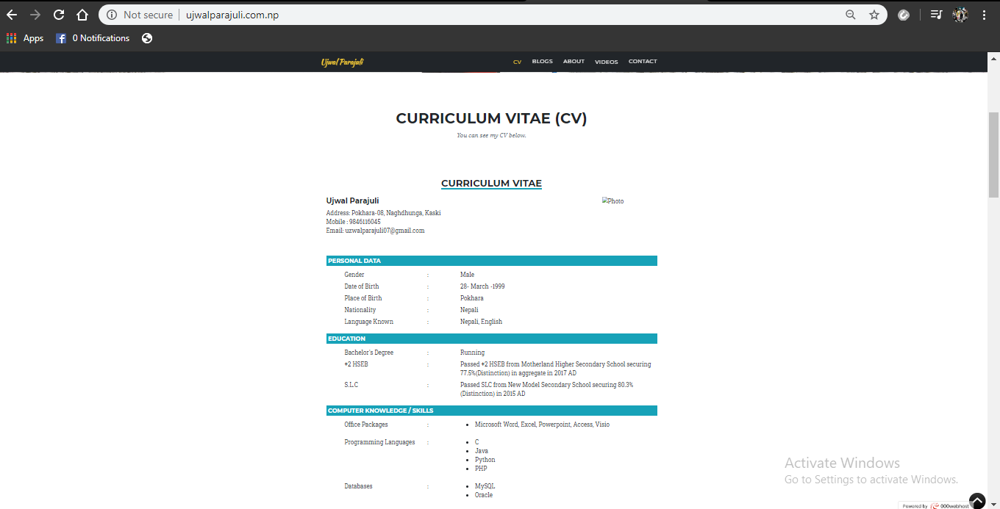
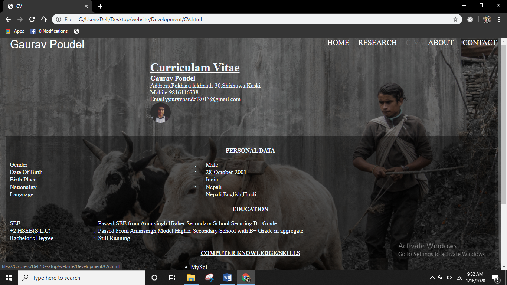
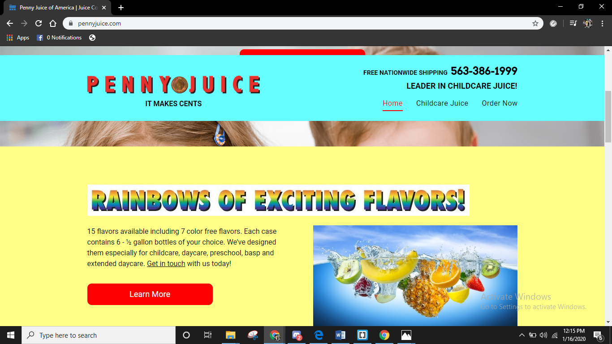
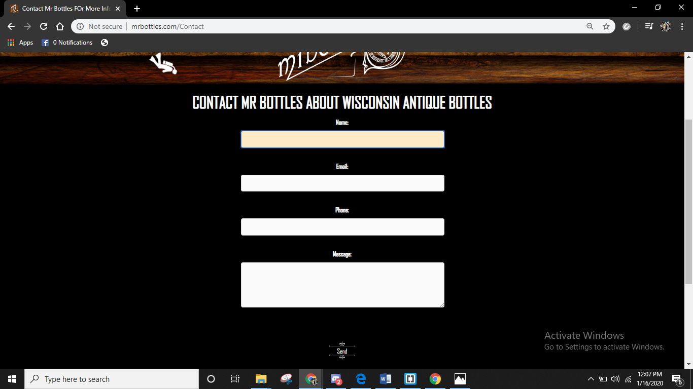
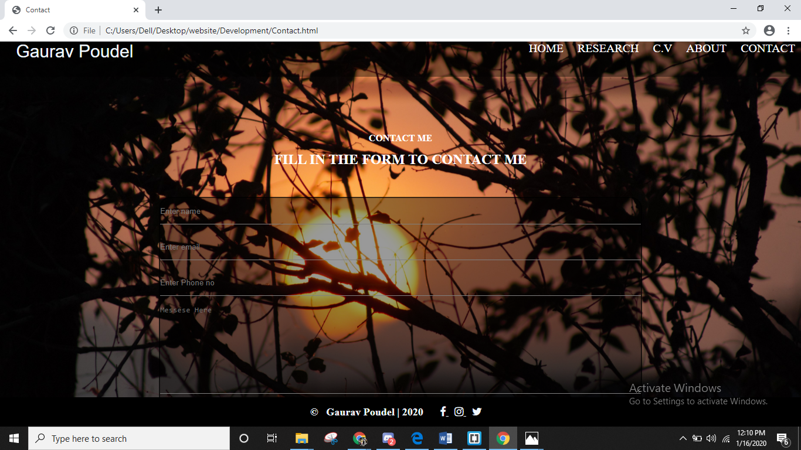
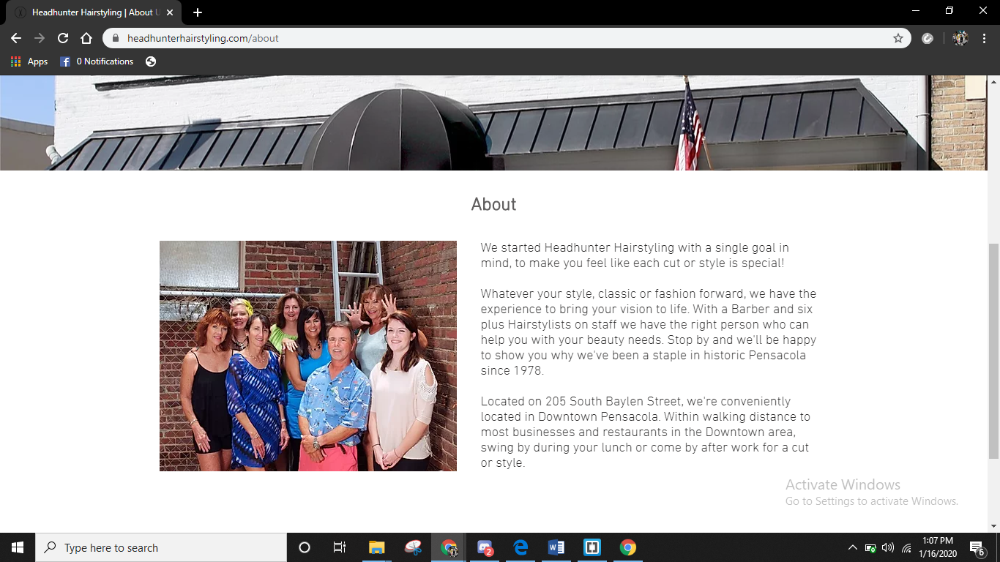
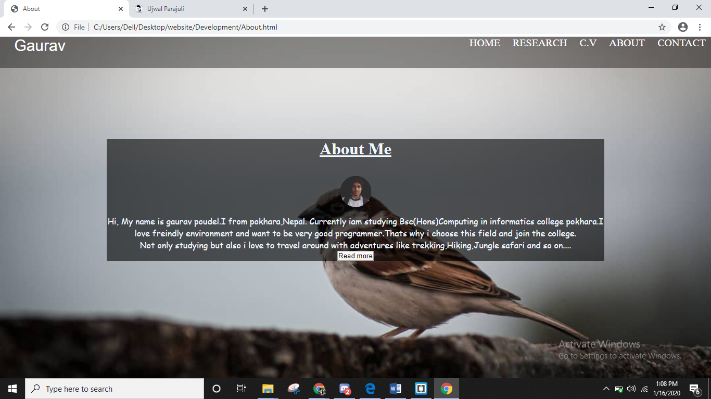
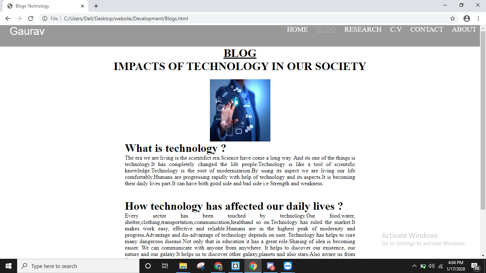

| Refrence website page | Mine page | Difference |
|---|---|---|
|  |  | Mine Cv is much more highlited than that CV and easy to navigate. |
|  | I have improved the color combination and make home page clear and make hover in while touching the text. |
|
|  |  | I change background color of form and also give placeHolder in there.Not only that also add my social media icon. |
|  |  | I have highlighted myself and also add read more button if the user wants to read more about me. |
|  | There is a meaningful image related to technology and paraphased of technology and its effect in our daily lives.While in that website content is less. |